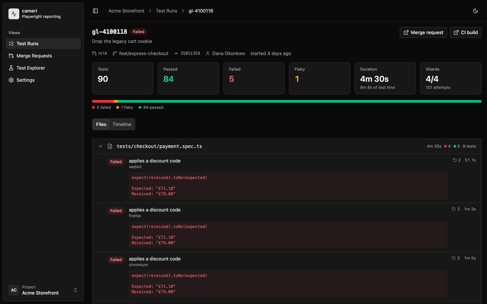

Sharded runs, reassembled
Playwright shards across N machines, so N reporters report into one logical run and none of them knows when the build is done. The server owns that: the first shard to arrive creates the run, the rest join it, and the last one out resolves the status.
The key they agree on comes from the CI build id — never a hostname, pid or
timestamp. GitHub Actions, GitLab CI, CircleCI, Buildkite and Jenkins are detected
automatically. If a shard dies without reporting, the run is swept to
timedOut rather than hanging forever.
